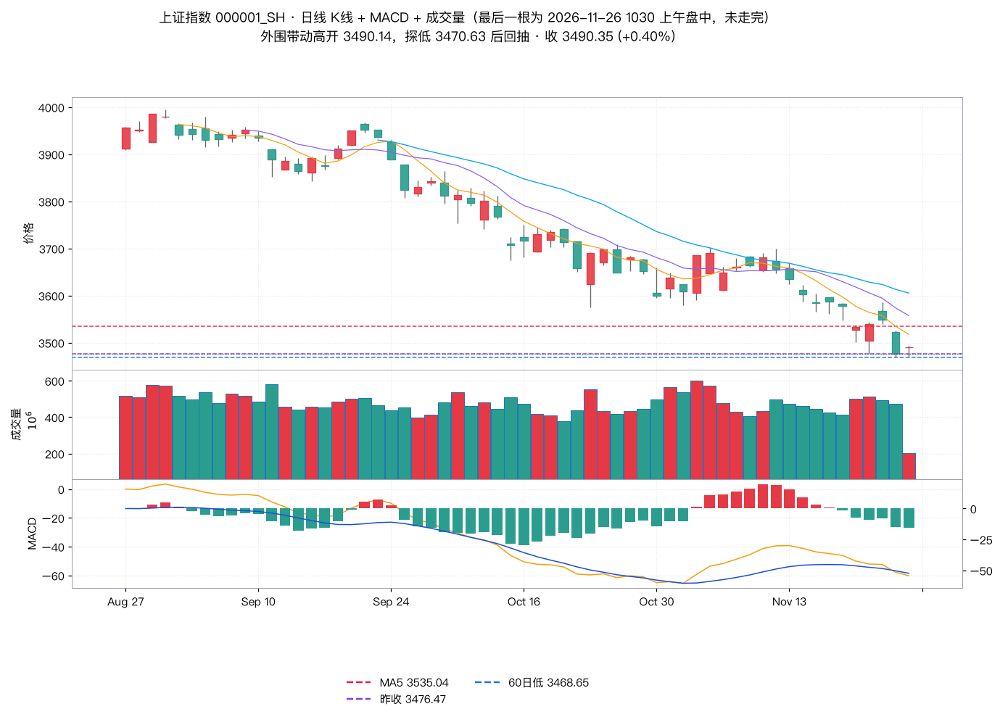
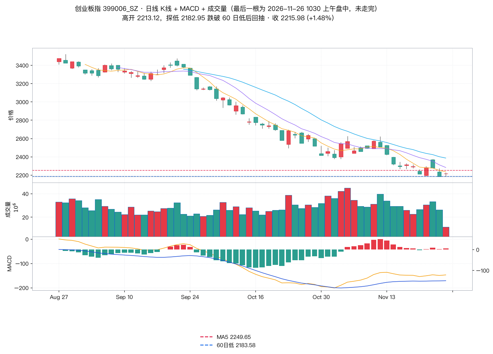
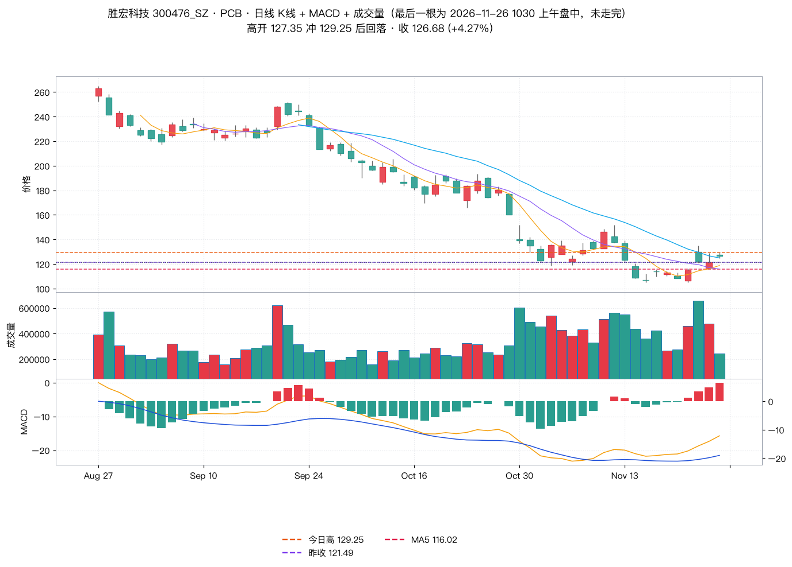
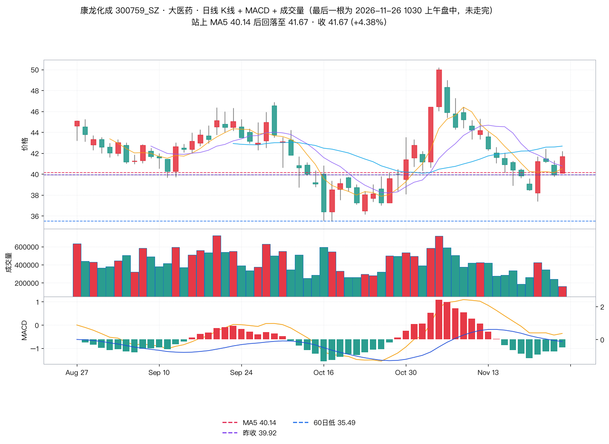

结论：高开回落后转弱势震荡，止跌信号未出现，仓位保持低位、减少出手频次。 10:30 上证 3490.35（+0.40%）、创业板指 2215.98（+1.48%），三大指数走的是「高开 → 探低 → 回抽」；上证未站 MA5 3535.04，底背驰与三买信号均未到。两市 10:30 成交 5978.0 亿，昨同刻 5747.3 亿（+4.01%），并非缩量。算力海外链（PCB）最强但只当超跌反弹；中线 7 只 + 短线 1 只全部无方法买点。
| 老师口径（11-26 十点看盘） | 实测（10:30 切片 / 11:30 快照） | 判定 |
|---|---|---|
| 「受外围影响高开」 | 三大指数集体高开：上证开 3490.14（+0.39%）、深成 10184.94（+0.98%）、创业板 2213.12（+1.35%） | 一致 |
| 「而后震荡下行」 | 高开后集体探低：上证最低 3470.63（跌破昨收 3476.47）、创业板 2182.95（跌破 60 日低 2183.58）、科创50 低 1167.93（-1.54%）；10:30 上证回到 3490.35（+0.40%） | 部分成立 |
| 「底背驰还没有形成，所以目前止跌信号没有出现」 | 缠论定性按老师口径引用；可核前提：上证 3490.35 未站 MA5 3535.04（差 44.69 点），止跌三要件第 2 条不满足 | 前提一致 |
| 「目前预估全天成交额在 1.2 万亿，继续缩量」 | 10:30 两市 5978.0 亿，昨同刻 5747.3 亿，+4.01%；按昨日上午占比外推全天约 1.05 万亿 | 口径差异 |
| 「算力方向高开之后短暂下探，目前震荡反弹，海外链更强一些，以 PCB 为代表」 | 元件/PCB 篮子 +5.27%（8 涨/0 跌）＞ 算力/CPO +4.92%（5/0）、华为概念 +3.92%；胜宏科技 10:30 126.68（+4.27%）、生益科技 +5.24% | 一致 |
| 「周期方向早盘的表现强一些，这些板块也属于防御类，持续性不强」 | 申万 L1 煤炭 +2.19%（涨 32/跌 1）、石油石化 +1.30%、有色金属 +1.25%；但高股息红利 -0.38%、保险 -0.46%、银行 -0.26% | 部分成立 |
判定词：一致 / 部分成立 / 口径差异（缠论定性按老师口径引用，不复算）
① 高开：上证开 3490.14（+0.39%）、深成 10184.94（+0.98%）、创业板 2213.12（+1.35%），成长端跳空最深。② 探低：上证最低 3470.63（跌破昨收 3476.47）、创业板 2182.95（跌破 60 日低 2183.58）、科创50 最低 1167.93（-1.54%）。③ 回抽：10:30 上证 3490.35（+0.40%，已回到开盘价上方）、深成 10194.07（+1.07%）、创业板 2215.98（+1.48%）。④ 止跌要件：上证 3490.35 未站 MA5 3535.04（差 44.69 点），止跌三要件第 2 条不满足 —— 老师的「止跌信号未出现」在日线口径下站得住。

上证指数：10:30 报 3490.35（+0.40%），未站 MA5 3535.04

创业板指：探低 2182.95 跌破 60 日低 2183.58，10:30 报 2215.98
两市 10:30 成交 5978.0 亿（沪 2758.4 + 深 3219.6），昨同刻 5747.3 亿，同比 +4.01% —— 「继续缩量」在同时点口径下不成立。昨日（11/25）全天 10099.0 亿，上午占 56.9%，同比例外推今日全天约 1.05 万亿，低于老师给的 1.2 万亿。情绪面：11:30 涨 2218 / 跌 2765 / 平 240，跌超 5% 81 只、涨超 5% 128 只；涨停 52、跌停 5、炸板 24；昨日涨停 51 只中 21 只今日下跌（10 只跌超 5%），接力仍偏弱。
① 算力链：元件/PCB +5.27%（8 涨/0 跌）＞ 算力/CPO +4.92%（5/0）＞ 华为概念 +3.92%，国产算力 +1.83%（4/3）、半导体 +0.10%（3/3）—— 「海外链更强、以 PCB 为代表」成立。② 周期与防御：申万 L1 煤炭 +2.19%（涨 32/跌 1）、石油石化 +1.30%、有色金属 +1.25% 居前，煤炭/石油篮子 +1.92%（5/0）；但高股息红利 -0.38%、保险 -0.46%、银行 -0.26% 同跌，防御只强在周期资源。③ 弱方：人形机器人 -2.27%（0 涨/9 跌）、AI视频/传媒 -0.09%。

胜宏科技（PCB）：高开 127.35 冲 129.25 后回落，10:30 报 126.68
| 标的 | 10:30 | 老师口径 | 关键位 / 触发条件 | 实测印证 | 动作 |
|---|---|---|---|---|---|
| 康龙化成 300759 大医药 | 41.67 +4.38% | 中线 · 上午较强，2-3 天观察修复 | 等日线有力度底分型 | 高 42.21，站上 MA5 40.14（+3.81%） | 等 |
| 瑞芯微 603893 端侧AI | 194.01 +0.17% | 中线 · 震荡已偏弱 | 等内部震荡后再找机会 | 低 193.51，MA5 195.59（差 1.58 元） | 不操作 |
| 海天瑞声 688787 机器人 | 94.65 -3.03% | 中线 · 同瑞芯微，不追涨 | 等 2-3 天 | 低 91.91，跌破 MA5 95.93（差 1.28 元） | 不操作 |
| 伊利股份 600887 大消费 | 33.37 -0.63% | 中线 · 无方法买点，盯 31.95 得失 | 31.95 | 低 33.36 未破（差 1.41 元）→ 顶背驰未成立 | 等 |
| 创业板ETF 159915 创业板宽基 | 2.231 +1.46% | 中线 · 站稳 2.392 后出 15 分钟底分型三买 | 2.392 | 高 2.241，未触（差 0.151 元） | 等 |
| 中国船舶 600150 船舶 | 34.79 -0.37% | 中线 · 走势没有止跌 | 无买点 | 低 34.73，收在 MA5 34.75 上方 0.04 元，缺有力度底分型 | 不操作 |
| 中芯国际 688981 国产算力 | 119.45 -2.09% | 中线 · 防范补跌 | 等日线有力度底分型 | 低 116.35，MA5 123.56（差 4.11 元） | 等 |
| 兆易创新 603986 存储芯片 | 201.22 +1.48% | 短线 · 创新低等底背驰，或突破出三买 | 198.28（60 日低） | 低 197.88 已破 60 日低 198.28，「创新低」条件已触发 | 等 |

康龙化成（大医药）：10:30 报 41.67，站上 MA5 40.14 后回落
① 「预估全天 1.2 万亿，继续缩量」：10:30 两市 5978.0 亿 vs 昨同刻 5747.3 亿，同比 +4.01%（同时点非缩量）；按昨日上午占比外推全天约 1.05 万亿，低于老师给的 1.2 万亿。
② 「震荡下行」：10:30 上证 3490.35 已回到开盘价 3490.14 之上、创业板 +1.48%，截至 10:30 是「探低后回抽」，不是单边下行。
③ 「资金回流意愿不高」：最新披露日（11/25）宽基 ETF 份额 6 只全部净增（中证500ETF +9.29%、上证50ETF +5.28%、创业板ETF +2.66%、中证1000ETF +2.42%、沪深300ETF +2.03%、科创50ETF +0.97%），与「回流意愿不高」相反（份额披露滞后一日，盘中申赎无法核验）。
④ 「防御类」：强在周期资源（煤炭 +2.19%、石油石化 +1.30%），但高股息红利 -0.38%、保险 -0.46%、银行 -0.26% 同跌，防御仅限周期。
⑤ 「外围影响」：外围具体来源不在 A 股数据范围，无法核验，只能确认三大指数集体高开。
其余判据当日一致 ✓：高开、探低、止跌信号未出现（未站 MA5）、算力海外链以 PCB 为代表、周期方向偏强、池内中线 7 只 + 短线 1 只全部无方法买点、伊利股份未破 31.95、创业板ETF 未触 2.392。
来源：都业华《高级班》十点看盘（早评）2026-11-26，执业编号 A0400626100004。以上内容仅供参考，不作为买卖依据，据此操作风险自担。投资有风险，入市需谨慎。
口径：指数与个股点位为 10:30 腾讯分时切片（当日未走完）；涨跌家数、申万 L1 板块、涨停/跌停/炸板池为 11:30 上午收盘快照（全市场 5,223 只）；两市成交额 = 沪 sh000001 + 深 sz399106 累计额；MA5 / 60 日高低取 Tushare 前复权日线（基准 2026-11-25 收盘）；K 线为前复权日线 + 当日 10:30 未走完 K 线，红涨绿跌。
老师原文未给具体总仓上限与买点，报告不代拟；缠论定性（底背驰、三买、底分型、顶背驰）按老师口径引用，未做分钟级复算，也不作为买点依据。